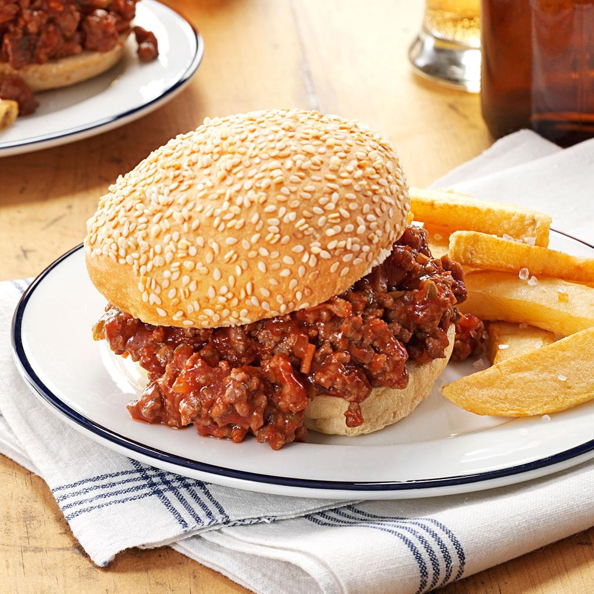

Sloppy Joe

Description
Five ingredients are all you need for these hearty sandwiches, which are great for family gatherings. Onion soup mix and sweet pickle relish add zesty flavor without much effort. —Marge Napalo, Brunswick, Ohio
Ingredients
- 3 pounds ground beef
- 3 cups ketchup
- 2/3 cup sweet pickle relish
- 1 envelope onion soup mix
Steps
- In a Dutch oven, cook beef over medium heat until no longer pink; drain. Stir in the ketchup, relish and soup mix; heat through. Serve immediately on buns, or cool mixture before placing in a freezer container. Cover and freeze for up to 3 months.
- To use frozen sloppy joes: Thaw beef mixture in the refrigerator; place in a saucepan and heat through. Serve on buns.